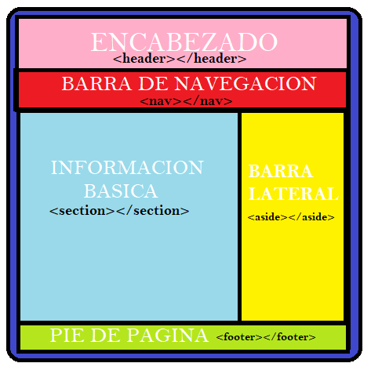
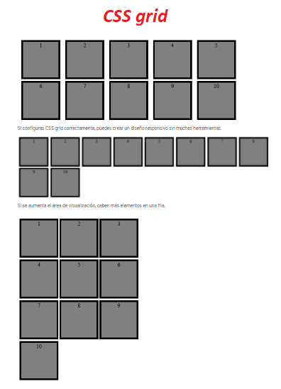
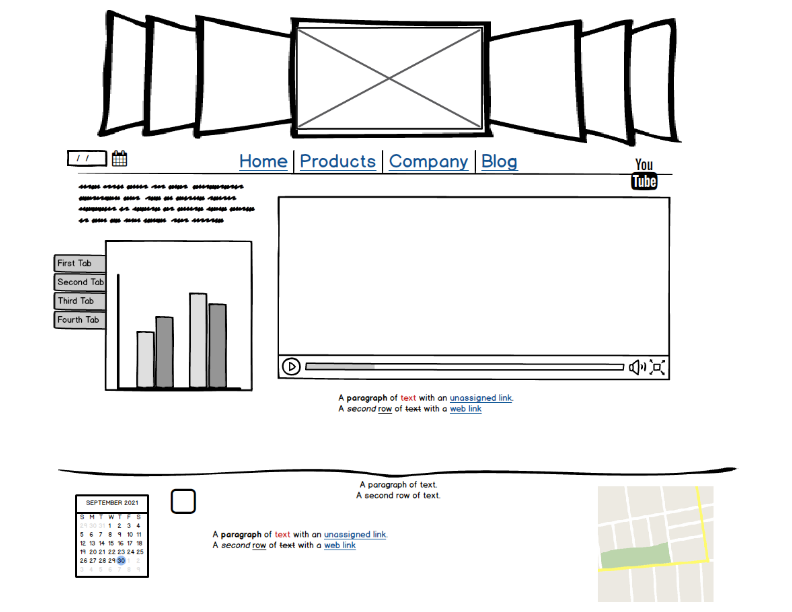

<html>

</html>
<html lang="es">

</html>

<head>
    <meta charset="UTF-8">
    <meta http-equiv="X-UA-Compatible" content="IE=edge">
    <meta name="viewport" content="width=device-width, initial-scale=1.">
    <title>Document</title>
</head>
<style>
    font: size
</style>
<center></center>

<body>
    <hr>
    <header>
        <style>
            size: 80px
        </style>
        <center>
            <h1>Etiquetas semánticas y CSS Grid</h1>
        </center>
    </header>
    <nav>
        <ul>
            <li>INICIO</li>
            <li>TEMAS
                <UL>
                    <li>ETIQUETAS SEMATICA</li>
                    <li>CSS GRID</li>
                </UL>
            </li>
            <li>RECURSO
                <UL>
                    <LI>OPCION 1</LI>
                    <LI>OPCION 2</LI>
                </UL>
            </li>
            <li>APRENDIZAJE</li>


        </ul>
    </nav>
    <hr>


    <main>
        <section>

            <h3> Propósito del sitio</h3>

            <p>Estimular las habilidades de ilustración y Ampliación conocimiento sobre Etiquetas Semánticas y CSS Grid
            </p>

            <article>
                <u>
                    <h4>Etiquetas Semánticas</h4>
                </u>

                <p>Las etiquetas semánticas facilitan a reducir la organización del documento, permitiendo que los
                    website sean mejor indexadas por los buscadores. Una etiqueta se estima como semántica nos informa
                    sobre lo que trata su contenido. <br>

                    La importancia y el alcance mundial que Internet tiene hoy en día en
                    nuestra sociedad hace imprescindible que se garantice su uso de forma
                    universal, de ahí la importancia que adquiere la accesibilidad a la hora de
                    diseñar una página o sitio web. El objetivo de este trabajo es exponer las
                    posibilidades que nos ofrece HTML5 a la hora de crear páginas accesibles para
                    todos los usuarios, independientemente de sus problemas visuales, auditivos,
                    sensoriales o de cualquier otro tipo. Comenzaremos por las nuevas etiquetas,
                    semánticas y multimedia, que incorpora este estándar y las posibilidades que
                    aportan para el correcto seguimiento de las Pautas de Accesibilidad al
                    Contenido de la Web (WCAG). Se describen también, brevemente, las nuevas
                    funciones y eventos que facilitan la interactividad en los nuevos diseños web,
                    sin depender del dispositivo utilizado. En definitiva veremos que, a pesar de
                    que se encuentra todavía en desarrollo, HTML5 constituye un prometedor
                    avance hacia el diseño de sitios web que favorezcan la igualdad de condiciones
                    para todos los usuarios de la red.
                </p>

                <h6>Diez, T., Domínguez, M. J., Martínez, J. J., & Sáenz, J. (2012). Creación de páginas Web accesibles
                    con HTML5. Consultado el, 26.</h6>

                <center></center>

                <h3> CSS Grid</h3>

                <p>CSS grid layout o CSS grid es una técnica de las Hojas de Estilo en Cascada que permite a los
                    desarrolladores web crear diseños complejos y adaptables con mayor facilidad en todos los
                    navegadores.​</p>

                <h4>
                    <p>¿Por qué se usa CSS grid layout?</p>
                </h4>


                <p>El internet móvil presenta un gran número de desafíos para los diseñadores de páginas web: debido a
                    la enorme variedad de diseños de los dispositivos móviles, es imposible saber qué formato tiene la
                    pantalla en la que se visualizará el contenido web. Por esto, es esencial que los elementos
                    individuales (cajas de texto, gráficos, elementos interactivos) se distribuyan de forma
                    independiente y al mismo tiempo de forma clara, teniendo en mente las respectivas condiciones de
                    espacio dadas por cada pantalla.

                    Hace un tiempo se trabajaba con los llamados floats, pero es una técnica compleja que daba lugar a
                    muchos errores. Hoy los diseñadores cuentan con dos métodos para implementar un diseño dinámico:
                    además de CSS grid, también se puede usar Flexbox. Sin embargo, las dos técnicas difieren en algunos
                    aspectos.

                    Flexbox es unidimensional. Esto quiere decir que los elementos solo se pueden mover a lo largo de un
                    eje. En cambio, un diseño CSS grid ofrece al diseñador web dos dimensiones para la colocación de los
                    objetos porque, en lugar de solo un eje, permite crear una rejilla con filas y columnas.</p>

                <h6>CSS grid: diseño con función inteligente. (s/f). Ionos.es. Recuperado el 1 de octubre de 2021, de
                    https://www.ionos.es/digitalguide/paginas-web/creacion-de-paginas-web/css-grid-layout/</h6>


                <center></center>


            </article>
        </section>

    </main>
<hr>
<h3>Mi mockup</h3>

<center></center>
    <hr>
    <hr>
    <center>
        <footer>
            <p>correo electronico: asierra0902@hotmail.com <br>
                Skype: asierra0902 <br>
                Fecha: 29 septiembre de 2021
            </p>
    </center>
    </footer>
    <hr>
    <hr>

</body>